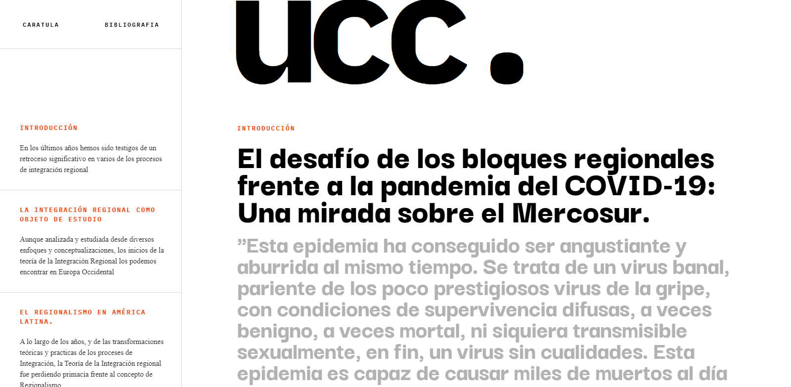

Bibliografía
- BRICEÑO RUIZ, José (2013). Ejes y modelos en la etapa actual de la integración económica regional en América Latina. Colección Textos Universitarios.
Universidad de Los Andes. Mérida, Venezuela.
- BRICEÑO RUIZ, José (2007). La nueva integración abierta en América Latina y el Caribe en La integración regional en América Latina y el Caribe. Colección Textos Universitarios. Universidad de Los Andes. Mérida, Venezuela.
- BRICEÑO RUIZ, José (2007). El Área de Libre Comercio de las Américas en La integración regional en América Latina y el Caribe. Colección Textos Universitarios. Universidad de Los Andes. Mérida, Venezuela.
- BRICEÑO RUIZ, José (2007). Los orígenes y el desarrollo de la integración autonómica latinoamericana y caribeña. Colección Textos Universitarios. Universidad de Los Andes. Mérida, Venezuela.
- DECIANCIO, Melisa (2018). La economía política internacional en el campo de las Relaciones Internacionales argentinas. Bogotá, Colombia.
- GUDYNAS, Eduardo & BUONOMO, Mariela (2007). Diccionario latinoamericano de términos y conceptos. Coscoroba ediciones. Montevideo, Uruguay.
- PERROTA, Daniela (2013). La integración regional como objeto de estudio. De las teorías tradicionales a los enfoques actuales en Relaciones Internacionales: Teorías y debates. Compilado por Llenderrozas, Elsa, EUDEBA. Buenos Aires, Argentina.
- SANAHUJA, José Antonio (2009). Del “regionalismo abierto” al regionalismo postliberal. Crisis y cambio en la integración regional en América Latina y el Caribe en Anuario de la integración de América Latina y el Gran Caribe 2008-2009.
Coordinadora Regional de Investigaciones Económicas y Sociales (CRIES).